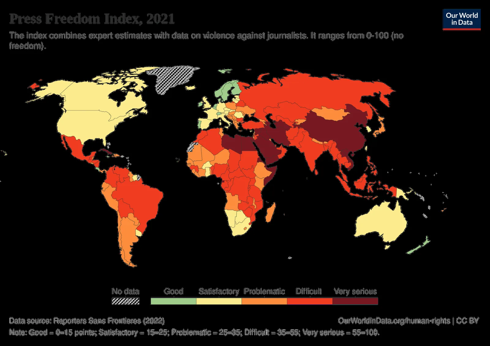

Objectif : développer l’esprit critique face au traitement médiatique et aux réseaux sociaux — comment l’information qui nous parvient construit notre perception du conflit.
L’analyse dont s’inspire ce chapitre (Zin TV, doc. de travail) relève trois procédés classiques de la propagande de guerre — ceux qu’Anne Morelli a systématisés : occultation des causes structurelles (contrôle territorial, expulsions, circulation entravée — rarement résumés avant le 7 octobre) ; essentialisation (« les Palestiniens » comme masse violente, sans diversité d’expériences) ; élection du point de départ — la date choisie fait le récit : « guerre déclenchée par le Hamas » n’est pas faux, mais « 59e année d’occupation » non plus — les deux sont vrais, un seul occupe le bandeau. Exemples belges relevés par le doc. de travail : les titres du Soir et de la RTBF du 7-10 octobre 2023 (« face à la barbarie », « crimes de guerre du Hamas ») — un vocabulaire moral avant toute analyse, alors que le blocus de Gaza datait de 2007 et la colonisation de 1967 (doc. de travail ; presse belge 2023).

Le doc. de travail documente le contraste : les otages israéliens du 7 octobre ont été nommés, filmés, pleurés en continu — les enfants tués à Gaza comptés par milliers, anonymes. Ce n’est pas un hasard éditorial isolé : les bases de données des morts publiées par le ministère de Gaza (remises au HCDH en 2024, nom, âge, sexe pour chaque entrée) ont été rarement reprises en détail par la presse européenne (doc. de travail ; HCDH). Sur les enfants, deux faits documentés que « nos journaux » rapportent peu : Israël est le seul pays au monde à faire passer systématiquement des enfants devant des tribunaux militaires (environ 500 à 1 300 mineurs par an — UNICEF, Défense des Enfants International) ; et les rapports onusiens 2024-2025 comptent Gaza comme le record historique d’enfants tués dans un conflit jamais vérifié par l’ONU (rapport du Secrétaire général, enfants et conflits armés ; DCI-P).
Le mécanisme est décrit par la propagande de guerre depuis 1914 — les « enfants belges aux mains coupées » — ce que les historiens appellent l’atrocity propaganda : l’horreur rapportée sert de catalyseur émotionnel, et sa vérification arrive toujours trop tard. Le cas des « bébés décapités » est instructeur : le 7 octobre a inclus des crimes réels d’une brutalité extrême — les documenter n’est pas les inventer — mais le chiffre de 40 nourrissons, cité par le porte-parole israélien et repris par Biden, n’a jamais été corroboré par les enquêtes ultérieures (doc. de travail ; vérifications AP/Washington Post). La leçon méthodologique tient en une phrase : vérifier, c’est distinguer l’horreur confirmée de l’horreur fabriquée — sans jamais utiliser l’une pour nier l’autre.
Notre génération est la première à vivre un conflit armé en continu dans une poche : Gaza est le premier « conflit TikTok » — le direct d’Al Jazeera (chaîne la plus suivie de la plateforme en 2024), les vidéos de secouristes, les lives de correspondants. Ce que l’algorithme a fait de cette abondance est révélateur : des études indépendantes (dont les fuites « Facebook Files » et les rapports de chercheurs) ont documenté la sous-portée de contenus palestiniens et la sur-portée de contenus israéliens sur certaines plateformes — et inversement selon les périodes (doc. de travail ; littérature plateformes 2023-2025). Le fait nouveau 2024-2026 : la guerre des archives — la suppression massive de comptes et de vidéos palestiniens signalés en masse (rapports Meta Transparency, 2024 ; excuses publiques de Meta en juillet 2024 pour des suppressions erronées), pendant qu’aucun média étranger n’a accès à Gaza — Israël interdisant la presse internationale du territoire, une interdiction confirmée par sa Cour suprême en août 2025. Résultat structurel : l’information sur Gaza passe d’abord par les journalistes palestiniens eux-mêmes — dont plus de cent ont été tués depuis octobre 2023 (CPJ : le conflit le plus meurtrier pour la presse jamais enregistré), comme Anas al-Sharif d’Al Jazeera, tué avec cinq de ses collègues en mai 2025 (CPJ ; RSF ; presse 2025).
1. Remonter à la source première — qui a publié en premier, quand, avec quel accès aux faits ? 2. Contextualiser — la date, le lieu, l’angle : une image vraie de 2021 racontée comme d’aujourd’hui est une information fausse. 3. Recouper — deux sources indépendantes minimum ; un fact-checkeur tiers (AFP Factuel, Bellingcat) vaut mieux que dix partages. 4. Interroger l’effet — pourquoi ce contenu provoque-t-il en moi colère ou joie ? l’émotion est le signal d’alarme du manipulateur. 5. Choisir — partager, corriger, ou ne rien faire : l’abstention est une décision éditoriale légitime. Le corpus d’entraînement est disponible : le site Demystificator (ressources anti-désinformation, doc. de travail) et les archives des vérificateurs cités — appliquer la méthode à trois cas du chapitre 3 (couveuses, cages, Bieber) puis à trois cas viraux de la semaine.
Espace de travail : cette page est le dossier vivant du chapitre — brouillons, activités, sources et repères s’y accumulent, séparément de l’index. Les attributions entre parenthèses dans le texte renvoient aux entrées ci-dessous.
Documents de travail (Drive) — « 8. Résonnance médiatique.docx » (document de base de ce chapitre — analyse Zin TV) · « 250407_bibliographie_Pal-Isr.docx » (bibliographie générale de l’équipe) · « 250701_dates clés_ISRAPAL.xlsx » · « 250701_Lexique_ISRAPAL.docx » · dossier racine « 2026_Outil péda_Israël-Palestine ».
Vérification des faits — AFP Factuel · CheckNews (Libération) · Les Décodeurs (Le Monde) · Bellingcat · France 24 Observers · Demystificator (ressources anti-désinformation, Justice & Paix) · TinEye (recherche inversée) · InVID (vérification vidéo).
Propagande et précédents — Anne Morelli, Les Principes élémentaires de propagande de guerre (2001) · précédents documentés : couveuses du Koweït (AP, 1990), « armes de destruction massive » d’Irak (2003) · « War of Words : How Media Shapes Perceptions of Gaza » (mémoire Columbia University, déc. 2024).
Économie de l’attention — Cathy O’Neil, Armes de destruction mathématique (2016) · Mathilde Aubin et Céline Vanier, L’Abus d’algorithme (2019) · documentaires « The Social Dilemma » / « Derrière nos écrans de fumée » · podcasts « Consomédias » (RTBF), Data Gueule.
Presse et guerre — Comité pour la protection des journalistes (décomptes, Gaza 2023-2026) · RSF — Classement mondial de la liberté de la presse · interdiction d’accès des médias étrangers à Gaza (confirmée par la Cour suprême israélienne, août 2025) · Meta Transparency Reports 2024 (suppressions de contenus palestiniens ; excuses publiques juil. 2024).
Éducation aux médias (Belgique) — CSEM · Média Animation · dossier RTBF « médias : mensonges et vérités ».
Enfants et conflit — Rapport du Secrétaire général — enfants et conflits armés (niveaux record d’enfants tués à Gaza, éditions 2024-2025) · Défense des Enfants International — Palestine (tribunaux militaires pour mineurs).